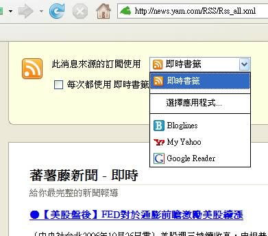

Firefox 2 新功能
Firefox 2 提供使用者一套熟悉的操作介面，同時也提升、延展了 Firefox 瘋狂受歡迎又創新的強大功能。我們傾聽用戶的意見，加上一些新功能，幫助您盡可能享受時下富有互動性與瞬息萬變的網路。
以下帶您了解 Firefox 2 中新增的功能：
偵測詐騙網站
「防詐騙」功能將 Firefox 的安全性帶上全新的等級，幫助保全您的金融資訊，並保護您不被竊取身分資料的竊賊攻擊。該功能會在您碰到可疑的假網站（也就是所謂的「釣魚網站」）時警告您，並自動帶您瀏覽搜尋頁面，以便您能找到所要的真正網站。
「防詐騙」預設是開啟的，運作的方式則是將您造訪的網站和一份存在本機的已知詐騙網站名單進行比對（該名單每三十分鐘會更新一次）。您也可以選擇「用線上服務商檢查造訪的網站」的模式，以確認您所看的網頁是正確有效的。Google 是預設的線上服務商，其他服務商將很快提供。

即時拼字檢查
這下不再打錯字了！Firefox 2 內建即時拼字檢查，讓您在留言板、Web 郵件中輸入文字後可立即知曉拼字正確與否，不需額外軟體。

即時標題
即時標題是網頁中定期更新之關鍵資訊的摘要。隨時更新、比起固定的網頁標題更能提供有用資訊，恰好適合做為書籤的標題。舉例而言，拍賣網站的即時標題可以是使用者關注的某項產品名稱、目前出價及所剩時間，財經網站的即時標題可以是股價資訊、目前匯率等等。目前已經支援的網站有 eBay、Yahoo! Finance、BBC、UPS 以及 FedEx 等。

管理消息來源 (RSS Feeds)
Firefox 2 協助您掌握網站消息來源 (Web feeds)，讓您可以預覽內容、並以數種方式訂閱網站。您可以使用網路服務訂閱消息來源，也可以建立 Firefox 即時書籤。Firefox 2 已經支援數種熱門的線上閱讀服務 (如 My Yahoo!、Bloglines 及 Google Reader)，使用者也可以自行添增服務。Firefox 2 支援 RSS 及 Atom 格式的消息來源。

復原瀏覽狀態
再也不會有流失的資料或是瀏覽狀態了。假若 Firefox 無預警地關閉的話，「瀏覽狀態回復」功能將會在您下次啟動 Firefox 時，把您之前正在使用的視窗和分頁完璧歸趙，回復您打進表單當中的文字、以及您原本正在進行的下載進度。另外，全新的「重新啟動」鈕讓您在安裝附加元件或軟體更新之後得以重新啟動瀏覽器，而不會迷失原本所在的網頁位置。甚至還有個選項可以永遠回復之前的瀏覽狀態：在「選項＞主要」中的「當 Firefox 啟動時：顯示上次瀏覽的視窗和分頁。」
搜尋引擎管理員
您現在可以快速添加、移除搜尋欄中的搜尋引擎，也可以輕鬆排列顯示順序。Firefox 同時也能偵測網站中可安裝的搜尋引擎，如有斬獲，引擎選取鈕便會發亮提醒您。這些都讓您更容易調整搜尋欄，符合個人需求。

附加元件管理員
新的附加元件管理員加強擴充套件及佈景主題的管理介面，讓您更能輕鬆自訂 Firefox。您可於「工具＞附加元件」開啟附加元件管理員。（本文稍後還有更多附加元件的相關資訊。）